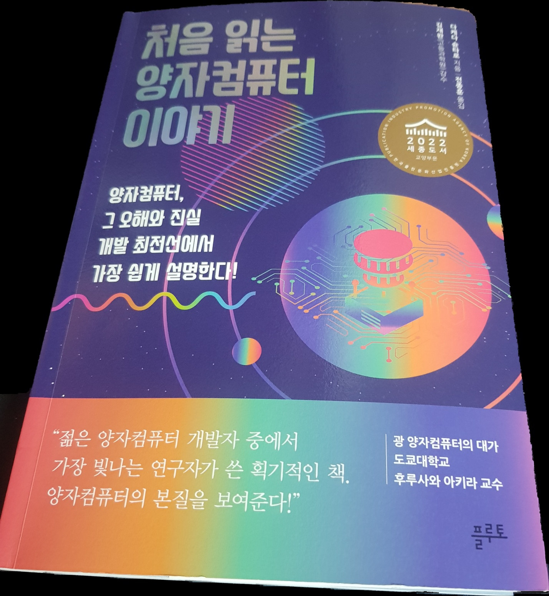

처음읽는 양자컴퓨터 이야기
2025.01.07

저자: 다케다 슌타로
발행일: 2021년
양자 컴퓨터의 기본 개념, 원리, 그리고 발전 방향을 쉽게 설명하며, 양자 컴퓨터가 해결할 수 있는 문제와 현재의 한계를 설명한다.
양자 컴퓨터라는 주제는 어렵게 느껴졌지만, 이 책은 이를 쉽게 풀어주는 입문서로서 유익했다. 양자의 기본 개념부터 양자 컴퓨터가 어떻게 동작하는지, 그리고 그 활용 가능성과 한계까지 폭넓게 다뤘다. 특히 이중 슬릿 실험과 중첩, 간섭이라는 물리 원리가 계산에 어떻게 응용되는지 설명한 부분이 흥미로웠다.
이 책을 통해 양자 컴퓨터가 현대 컴퓨터와는 완전히 다른 방식으로 작동하며, 화학 계산이나 최적화 문제 같은 특정 분야에서 획기적인 성능을 낼 가능성이 있다는 점을 배웠다. 양자 컴퓨터의 기본 개념을 이해하고 싶다면 추천할 만한 책이다.
1. 양자 컴퓨터란 무엇인가?
- 양자 컴퓨터는 기존의 컴퓨터와 달리 양자역학이라는 물리현상을 사용. 이로 인해 지금까지의 컴퓨터로는 할 수 없는 계산이 가능해져 성능이 향상된 컴퓨터라 할 수 있다.
2. 양자란 무엇인가?
- 양자는 물리학에서 에너지, 전자, 광자 등 특정 속성의 최소 단위를 나타낸다. 양자의 세계는 고전역학과는 다른 법칙의 지배를 받으며, 그 원리를 정리한 이론이 양자역학이다.
- 이중 슬릿 실험은 양자가 입자성과 파동성을 동시에 가짐을 보여준다. 입자라고 생각했던 양자는 파동처럼 퍼져서 두 슬릿을 동시에 통과하고 간섭한다. 마지막에 벽에 부딪히면 입자의 모습으로 돌아와 한 곳에 나타난다. 양자의 파동함수가 중첩된 상태로 두 슬릿을 통과하며, 진폭의 비와 위상의 차이에 의해 간섭 패턴이 형성된다.
- 양자 컴퓨터의 계산 원리는 이중 슬릿 실험과 비슷하다. 몇 가지 계산 패턴을 중첩하여 동시에 실행한 후, 각 패턴을 잘 간섭시켜 원하는 답을 찾아낸다.
3. 양자 컴퓨터의 원리
- 현대의 컴퓨터는 비트로 정보를 나타내고, NOT과 AND 등의 논리연산을 조합해서 계산을 처리한다. 양자 컴퓨터는 양자비트로 정보를 나타내고 양자 논리연산을 조합해서 계산을 처리한다.
- 양자비트가 n개 있으면 2의 n제곱 가지의 패턴 정보를 중첩해서 동시에 가질 수 있습니다. 이때 단순히 중첩할 뿐만 아니라, 2의 n제곱 가지 패턴의 중첩 방식에 따라 정보를 표현합니다.
- 양자 컴퓨터는 양자 논리연산을 사용해 중첩 방식을 나타내는 많은 파동을 교체하거나 타이밍을 어긋나게 하거나 간섭시켜 답을 끌어내는, 파동을 사용한 계산 장치다. 양자 컴퓨터는 중첩한 많은 패턴을 병렬로 계산할 수 있지만, 마지막으로 얻을 수 있는 계산 결과는 하나이므로 병렬 계산만으로 계산이 빨라지지 않는다. 중첩만이 아니라 파동의 간섭을 잘 활용하는 것이 중요
4. 양자 컴퓨터의 응용
- 문제의 규모가 커지면 계산에 들이는 수고가 폭발적으로 증가하여 현대의 컴퓨터로는 풀기 어려운 문제가 많다. 하지만 양자 컴퓨터를 사용하면 계산 횟수를 줄여서 더 빨리 풀 수 있는 사례가 있다.
- 그로버 알고리즘은 구조화되지 않은 데이터베이스 검색이나 최적화 문제 등에 사용하는 알고리즘으로, 답이 될 수 있는 다양한 후보를 중첩하여 동시에 조사한다. 이후 간섭 효과를 활용해 올바른 답을 추려내므로 계산 횟수를 줄일 수 있다.
- 화학 계산에서는 전자가 궤도에 들어가는 방식을 계산하면 그 물질의 성질을 알 수 있다. 전자는 양자역학 규칙을 따라서 궤도에 들어가며 마찬가지로 양자역학 규칙을 따르는 양자 컴퓨터를 사용하여 계산할 수 있다.
- 양자 컴퓨터로 고속화할 수 있는 계산이 여러 가지 발견되었지만, 전부 파동의 간섭과 중첩을 조종해서 문제를 푸는 양자 컴퓨터만의 풀이법을 사용하는 것이 고속화의 본질이다.
5. 양자 컴퓨터의 개발 과제
- 양자 컴퓨터를 만들기 어려운 이유는 예민한 양자 하나하나를 각종 방해물로부터 보호하고, 높은 수준의 정확도로 조종해야 하기 때문이다. 현재의 양자 컴퓨터는 아직 규모가 작고, 완전한 오류 정정 기능이 없다. 앞으로 규모를 확장하고 오류율을 낮추어, 완전한 오류 정정 기능을 갖춘 양자 컴퓨터를 목표로 해야 한다.
- 양자 컴퓨터의 대표적인 방식으로는 초전도 회로 방식, 이온 방식, 반도체 방식, 광 방식 등이 있다.
- 초전도 회로 방식과 이온 방식은 상업적 양자 컴퓨터의 주요 후보로 자리 잡고 있으며, 지속적인 기술 발전이 이루어지고 있다. 반도체 방식은 기존의 반도체 기술과의 호환성이 강점이고, 광 방식은 양자의 전송 및 통신에서 중요한 역할을 한다. 그러나 각 방식은 장단점이 존재하며, 최종적으로 어떤 방식이 주류가 될지는 불확실하다.